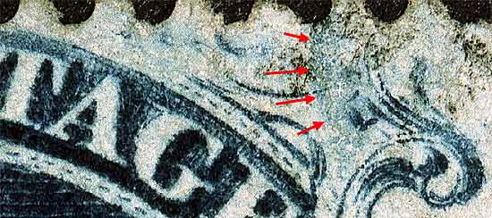

1¢ Franklin Issue of 1851-1857, PLATE 4
Pos 52L4, (Scott #22)
Type IIIa, Relief F
Issued both imperforate and perforate.
Had this been an imperforate copy then it would be Scott Number 8A.
Plate 4 changed it's appearance as many plating marks faded away due to plate wear, and new plating marks developed over the life of the plate. One of the most annoying aspects of trying to identify Plate 4 positions is the appearance and disappearance of these plating marks.
The red arrow below the U of US indicates the small colorless "F" Relief flaw. The Ashbrook/Neinken diagrams exaggerate the size of this flaw. The shoulder dot can also be seen below. This dot is found on nearly all "F" Reliefs from this plate.
The lack of the top curved line and dash marks above the "TA" of POSTAGE is consistent for this position. The plating diagrams do not reflect this correctly.


Thanks for visiting this site. I hope you learn something new as we are making new discoveries all the time. You, the visitor, have my permission to link to my pages and to share the INFORMATION with others. The images themselves fall under the fair use guidelines established by the United States Congress and Copyright law. Basically contact us before using. I also ask in return that you send me an e-mail if I have made a mistake, or have made some other technical blunder that in my rush to put these pages up would cause the visitor confusion. Please also visit my other website at www.slingshotvenus.com. and support the live music arts. While your there, be sure to purchase our music. There are not many philatelic rock stars around and we need all the help we can get. :-)
I can be reached at: nerdman@ix.netcom.com
Copyright © 2001-2006 Richard Doporto, Sonic Imagery Labs